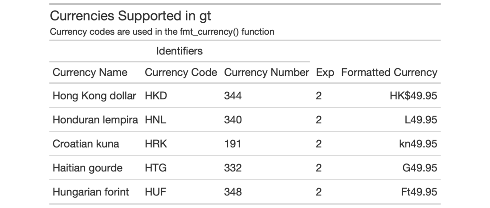
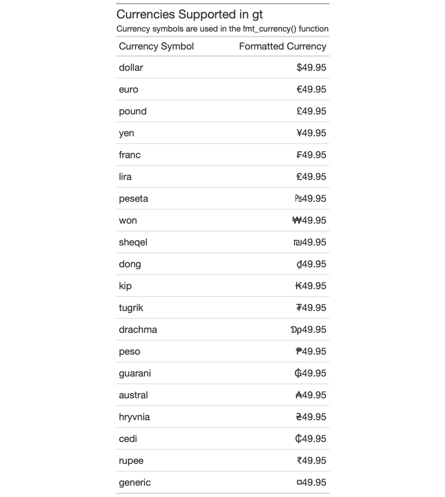

| info_currencies {gt} | R Documentation |
The fmt_currency() function lets us format numeric values as currencies.
The table generated by the info_currencies() function provides a quick
reference to all the available currencies. The currency identifiers are
provided (name, 3-letter currency code, and 3-digit currency code) along with
the each currency's exponent value (number of digits of the currency
subunits). A formatted example is provided (based on the value of 49.95) to
demonstrate the default formatting of each currency.
info_currencies(type = c("code", "symbol"), begins_with = NULL)
type |
The type of currency information provided. Can either be |
begins_with |
Providing a single letter will filter currencies to only
those that begin with that letter in their currency code. The default
( |
There are 172 currencies, which can lead to a verbose display table. To make
this presentation more focused on retrieval, we can provide an initial letter
corresponding to the 3-letter currency code to begins_with. This will
filter currencies in the info table to just the set beginning with the
supplied letter.
An object of class gt_tbl.


10-3
Other Information Functions:
info_date_style(),
info_google_fonts(),
info_locales(),
info_paletteer(),
info_time_style()
# Get a table of info on all of # the currencies where the three- # letter code begins with a "h" tab_1 <- info_currencies(begins_with = "h") # Get a table of info on all of the # common currency name/symbols that # can be used with `fmt_currency()` tab_2 <- info_currencies(type = "symbol")